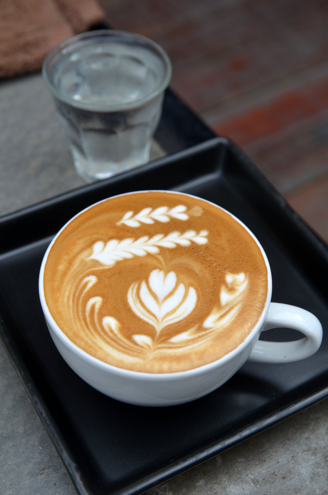

Americano is an espresso-based coffee drink made with hot water and espresso
Latte is an espresso-based coffee drink made with steamed milk and a thin layer of frothed milk.
Flat White is a coffee drink made by pouring steamed milk over espresso.
Macchiato is an espresso "marked" with a small amount of milk or milk foam